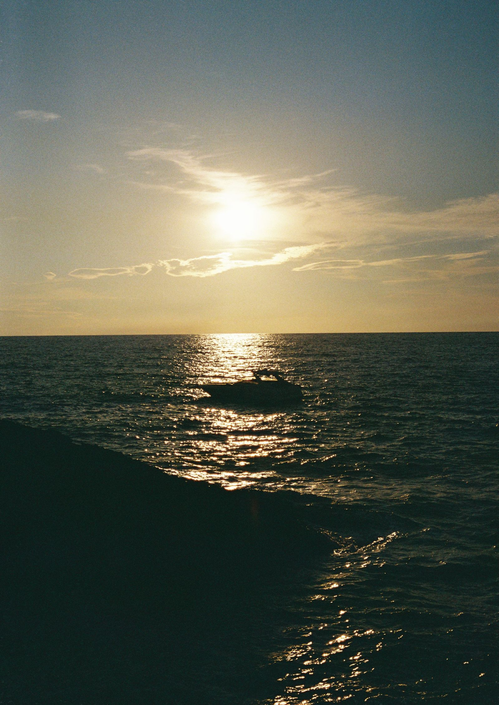

Dos horas y media diseñadas para vivir uno de los momentos más mágicos de Mallorca: la puesta de sol desde el mar. Bordeamos la espectacular costa de Formentor con la tranquilidad y la exclusividad de navegar en privado, y terminamos frente a la Fortaleza viendo cómo el sol se esconde sobre el Mediterráneo.
Zarpamos al caer la tarde, con la luz cálida del final del día sobre la bahía.
Bordeamos la espectacular costa de Formentor descubriendo sus acantilados, calas y rincones escondidos, con unas vistas privilegiadas de la zona.
La última parada, en un enclave único, para contemplar cómo el sol se esconde sobre el horizonte creando un paisaje inolvidable sobre el mar.
Ponemos rumbo al puerto tras una experiencia perfecta para relajarse y crear recuerdos únicos.